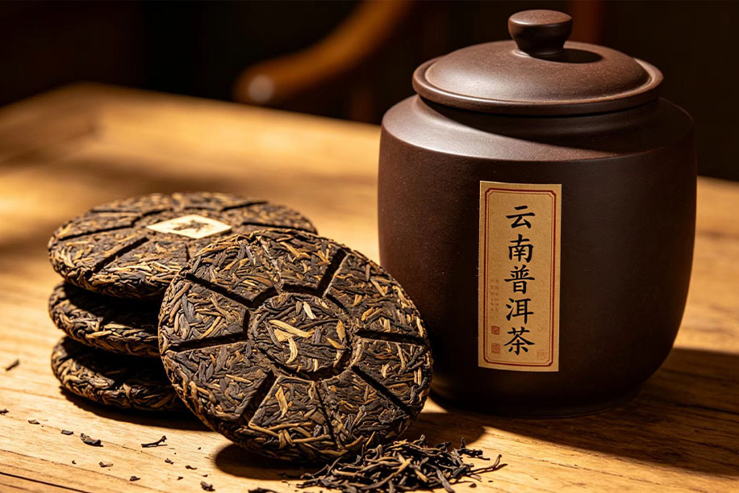
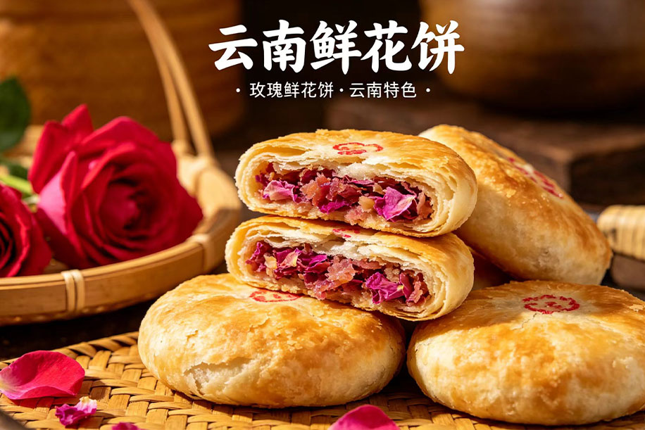
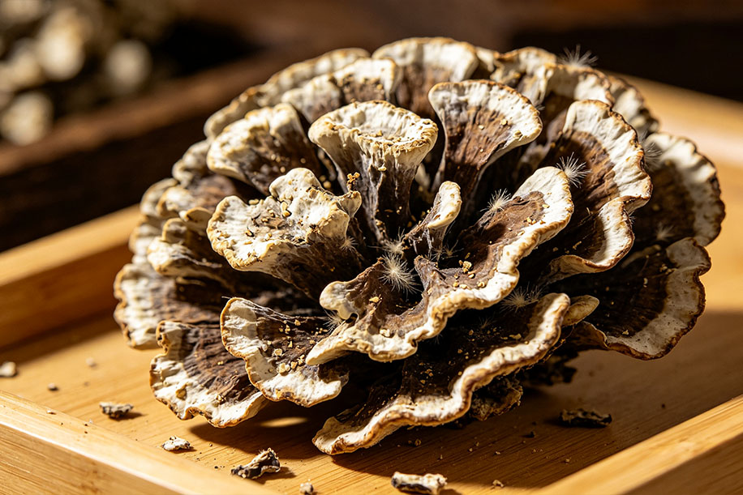
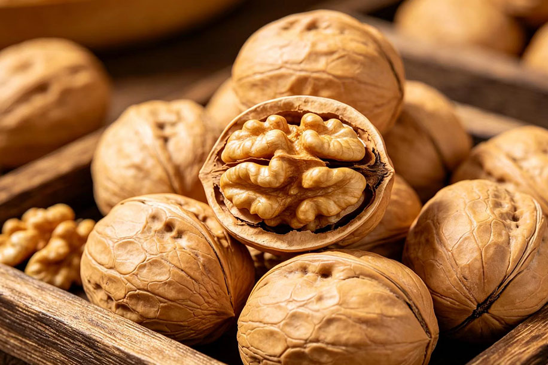
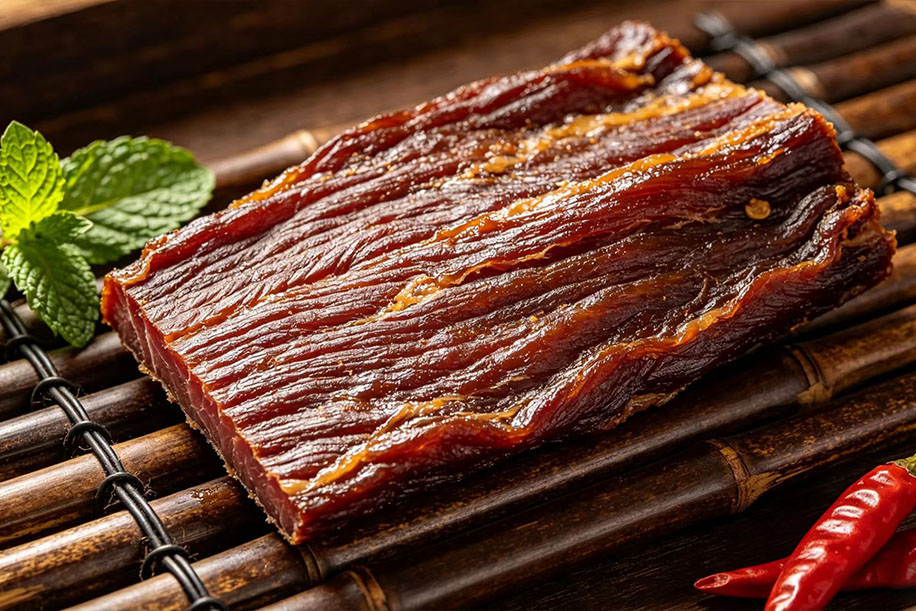
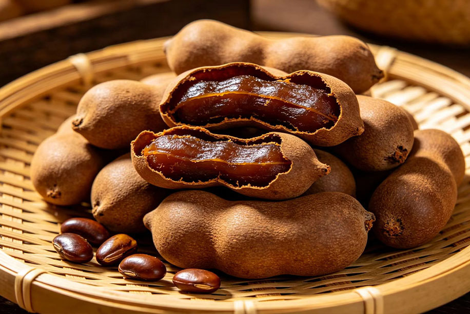
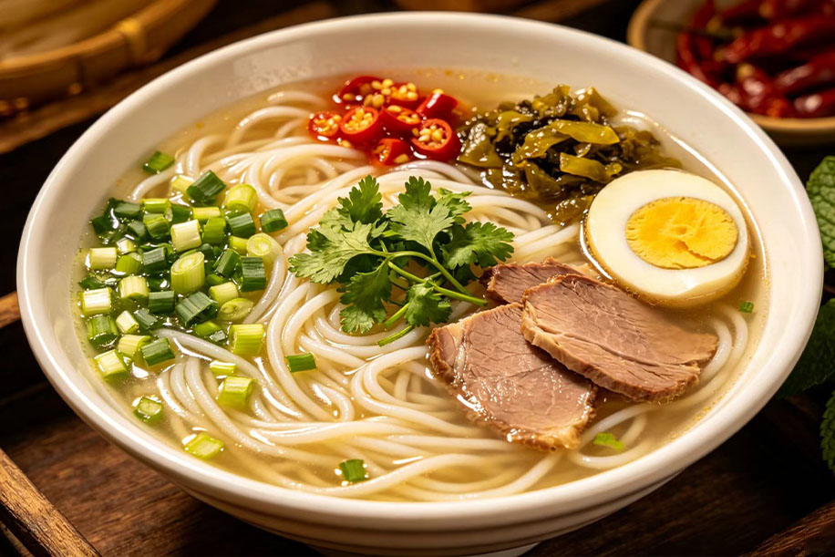

丽江腊排骨
丽江腊排骨是纳西族饮食文化
云南腊猪脚是滇地少数民族（哈尼、壮、彝、纳西等）传承千年的经典腊味，以咸香醇厚、皮糯肉烂、腊香浓郁著称，是云南冬季腌腊与节庆宴席的代表性美味，新鲜肉食不易久存，各族先民为储肉过冬，形成 “盐腌 + 熏烘 + 风干” 的传统技法。腊猪脚最初是年猪宰杀后自制自食的年货，后逐渐成为节庆、婚丧嫁娶及招待贵客的硬菜，在哈尼长街宴、壮乡年宴上尤为常见。腊猪脚是云南高原生存智慧的体现，也是各族饮食文化交融的见证。从茶马古道马帮干粮到如今旅游美食名片，它承载着乡土记忆与待客之道，是滇味腊香里最温暖醇厚的一口。
云南腊猪脚
是云南滇东北及滇南山区（昭通、文山、红河、普洱等地）的传统腊味腊味
产地：主产于昭通（镇雄、威信）、文山（广南、丘北）、红河（哈尼族地区）、普洱（思茅、富东）等地，高寒山区气候温凉，适合腊味长期保存。 哈尼族长街宴、彝族年猪饭、壮族节庆宴的必备主菜。 代表云南山区 “杀年猪、腌腊味、庆丰年” 的饮食传统与烟火温情，腊猪脚炖红豆 / 萝卜 / 土豆：温水浸泡 2–3 小时去咸，柴火烤皮刮净，慢炖 2–3 小时，汤浓味醇，配菜吸满腊香。
云南十大特产
01普洱茶

普洱茶是以云南大叶种晒青毛茶为原料，分为生茶和熟茶类型。爱喝茶的人都知道茶贵在新，但普洱茶贵在“陈”。所以说普洱茶是“可入口的古董”。很多人都喜欢普洱茶，不仅因为它口味香型独特，滋味浓醇;更重要的是它有一定的功效，如降低血脂、减肥、抑菌助消化、暖胃、生津、止渴、醒酒解毒等。
02鲜花饼

鲜花饼是来云南旅游必带的伴手礼，以云南特有的食用鲜花花入料的酥饼，是极具云南风味的经典点心。口感酥软，甜而不腻，入口即化，浓郁的鲜花香隔着饼皮就能闻到。
03宣威火腿
宣威火腿因产于云南省的宣威县而得名，我国四大名腿之一，驰名中外。云腿形似琵琶，特点有色香味美，肉质滋嫩，营养丰富，风味独特，以及有19种氮基酸、11种维生素、9种微量元素。
04野生菌

每年春夏之交，历时数月的雨季开始来临，吃鲜菌的时候也就到了。云南人为什么吃菌子这么上瘾，当然因为它的美味，吃不到海味，山珍可不能少。有新鲜的，有风干的，也有装瓶即食的，可以任随你挑选。
05小粒咖啡
云南小粒咖啡属于后谷咖啡的一种，是世界公认的咖啡品种，小粒咖啡以浓而不苦、香而不烈，颗粒小面匀称，醇香浓郁，且带有果味而驰名中外。价格实惠，云南各大超市都能买到。
06特色工艺品
云南少数民族众多，不乏各种手艺人，其所制作的手工艺品款式多样，带有很强的民族特色，像扎染、小风铃、编织包、木雕、笔筒、墙饰、紫陶、斑铜等等都很有趣味。
07核桃

市场上的核桃主要产自新疆和云南。云南核桃颜色深，表面褶皱很多，个头稍小，很香。其中的优良品种莫过于漾濞核桃了，不仅质量高、产量大、品种多，还以其个大、壳薄、仁厚、味香、色白,易整仁取出而享誉天下。
08牛干巴

云南牛干巴是云南回族传统腌制美食，也是滇味标志性腊味，以寻甸牛干巴最负盛名，为国家地理标志产品与省级非遗，历史超 700 年
09甜角酸角

云南产酸角从口感上可分为酸角、酸甜角和甜角。酸角果肉难剥离，香味淡、味道偏酸，口感微涩，肉质粗糙。甜角味道微酸多甜，果肉易剥离，香味浓、肉厚、肉质细腻，口味胜于酸角，含糖量比较高。可直接剥壳食用，来云南旅游可以带Q糖果型的袋装小食品当做伴手礼。
10云南米线
